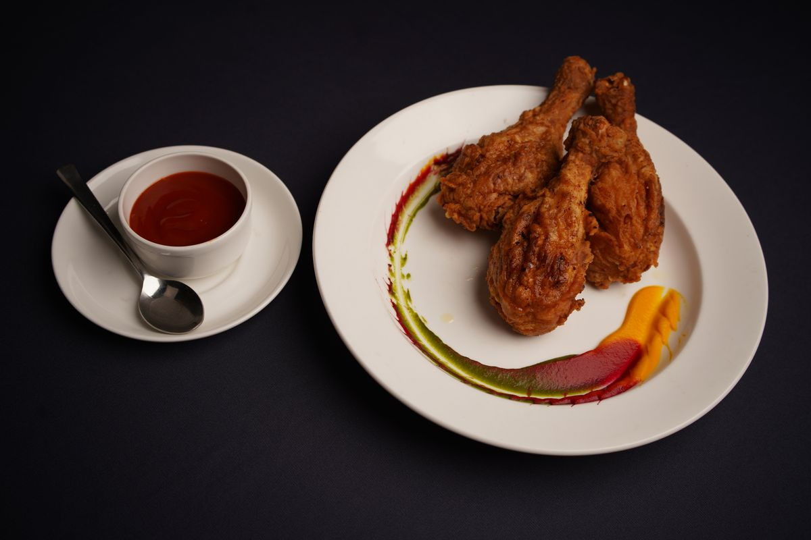

Gumbo
A long-running plate at a restaurant founded in 1939.
Hurst's Restaurant
Kenner, Louisiana
Hurst's Restaurant is a family-run soul food and Southern seafood restaurant in Kenner, Louisiana. Katherine and LJ Hurst founded the restaurant in 1939 as LJ's Restaurant and Lounge, later known as Hurst Chicken Shack.
Rated 4.8 from 104 Google reviews.
Call to book: (504) 467-1370
A long-running plate at a restaurant founded in 1939.
Smothered ribs from the Southern menu.
Red beans and rice, a staple of the menu.


All photos on this page are stock photos, not photos of this business.
2152 Airline Dr, Kenner, LA 70062
Plan a visitCall: (504) 467-1370